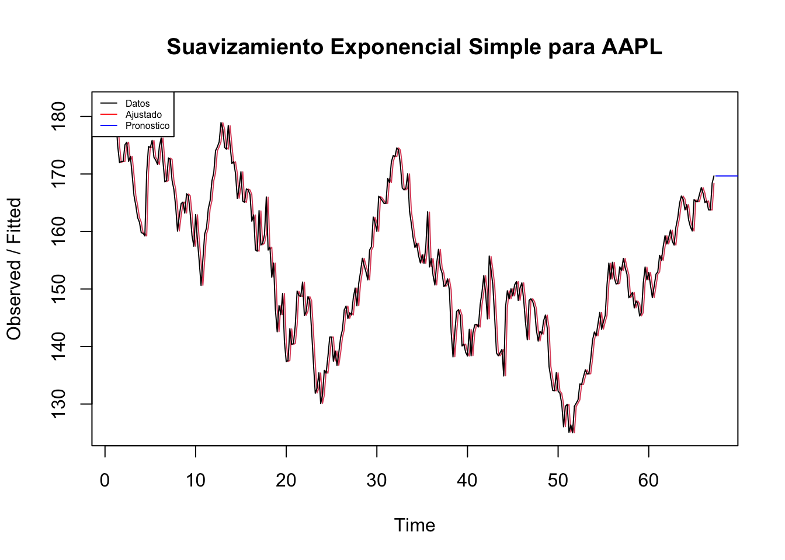
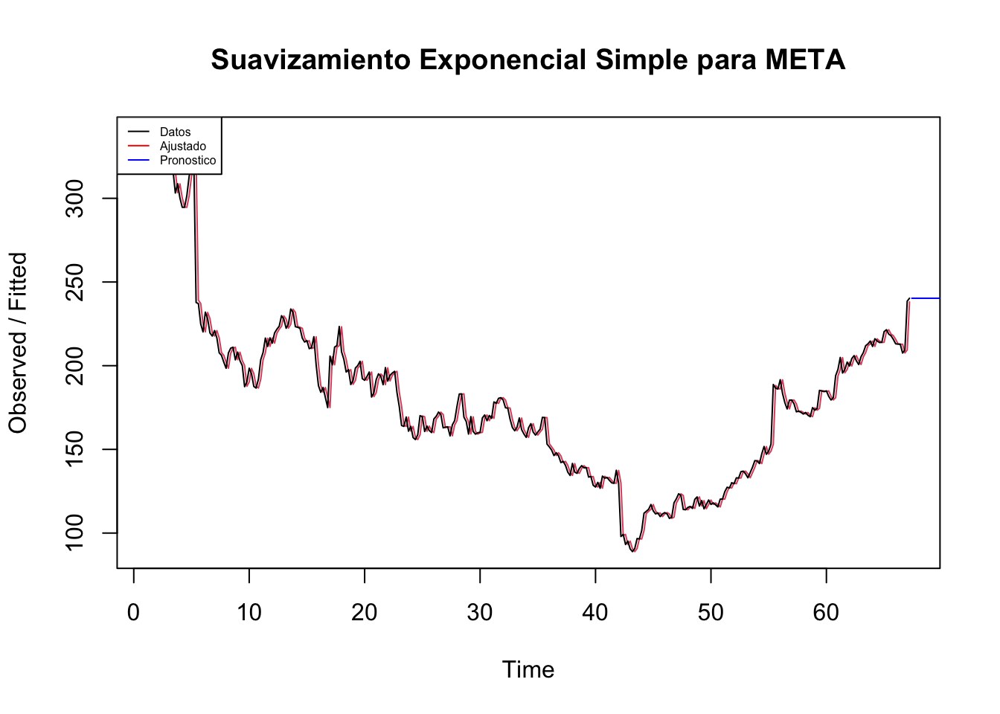
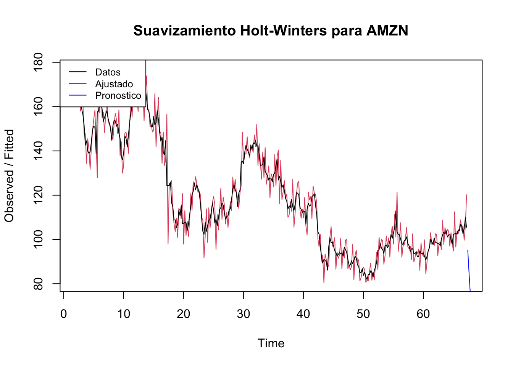
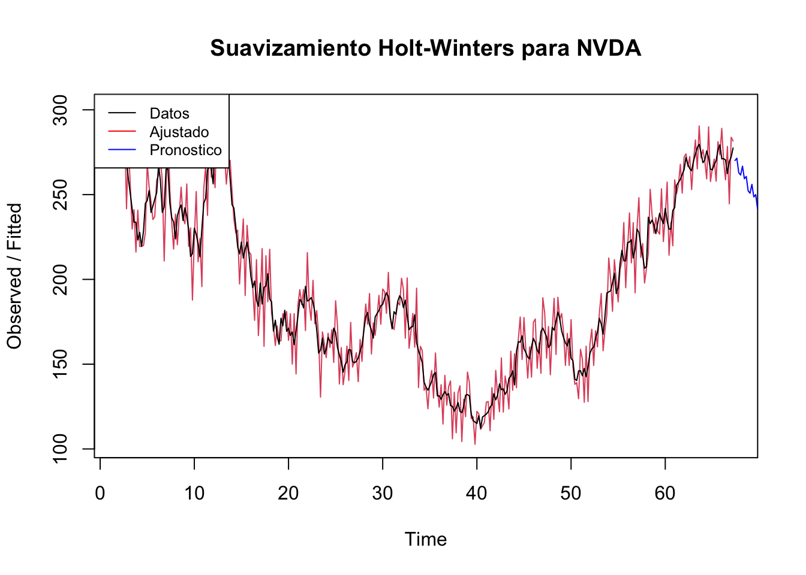
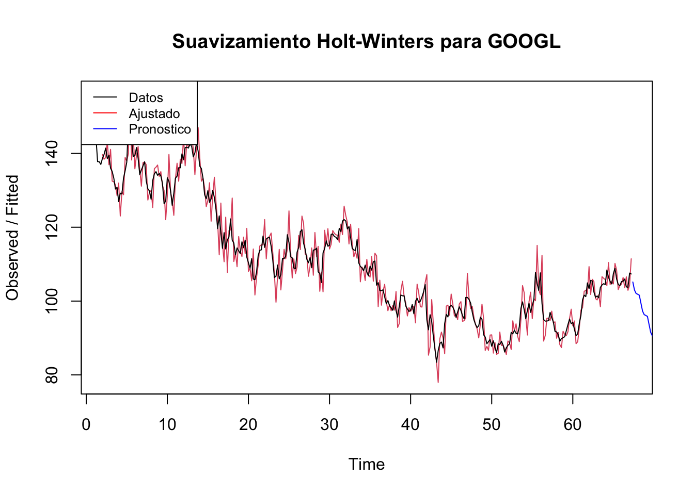

5 Métodos de Suavizado
La finalidad de los métodos de suavización es tratar de reducir las fluctuaciones en datos recopilados a lo largo del tiempo; con esto, se pretenden develar tendencias o ciclos en dichos datos a medida que el ruido y las fluctuaciones son suavizadas. Dentro de los métodos de suavizaciones podemos encontrar la suavización exponencial simple.
5.1 Método de Suavización Exponencial Simple
De acuerdo con [9] “este método se basa en promediar (suavizar) valores pasados de una serie de manera exponencialmente decreciente. La observación más reciente recibe el peso más grande, la siguiente observación más reciente recibe menos peso, la observación de dos periodos en el pasado recibe incluso menos peso, y así́ sucesiva- mente”. Este método de suavización está dado por la siguiente fórmula:
\[\begin{align*} \hat{Y}_{t+1} = \hat{Y}_{t}+\alpha(Y_{t}-\hat{Y}_{t}) \end{align*}\]
Donde:
\(\hat{Y}_{t+1}=\) nuevo pronóstico
\(\hat{Y}_{t}=\) anterior pronóstico
\(\alpha =\) ajuste
\(Y_{t}-\hat{Y}_{t}\) error en el anterior pronóstico
legend_labels <- NULL
for (i in unique(precios$symbol)){
stock <- precios[precios$symbol == i,]
stock_ts <- ts(stock$close, frequency=5)
cat(paste("Acción: ", i, "\n"))
fit_se <- HoltWinters(stock_ts, beta = FALSE, gamma = FALSE)
alpha <- fit_se$alpha
cat(paste("Valor Alfa Ajustado: ", alpha, "\n"))
mae <- mean(abs(fit_se$fitted - stock_ts))
cat(paste("Mean Absolute Error (MAE): ", mae, "\n"))
predictions <- forecast(fit_se, h = 30)
plot(fit_se, main = paste("Suavizamiento Exponencial Simple para",i))
lines(predictions$mean, col = "blue")
legend("topleft", legend = c("Datos", "Ajustado", "Pronostico"), col = c("black", "red", "blue"), lty = 1 ,cex = 0.5)
}## Acción: AAPL
## Valor Alfa Ajustado: 0.990885811212829
## Mean Absolute Error (MAE): 2.4442271513915
## Acción: MSFT
## Valor Alfa Ajustado: 0.999925349132791
## Mean Absolute Error (MAE): 4.46169075890074## Acción: AMZN
## Valor Alfa Ajustado: 0.984603434496642
## Mean Absolute Error (MAE): 2.67787353933152## Acción: NVDA
## Valor Alfa Ajustado: 0.999957248211832
## Mean Absolute Error (MAE): 5.82824203408637## Acción: GOOGL
## Valor Alfa Ajustado: 0.972014449484642
## Mean Absolute Error (MAE): 2.04365055770677## Acción: BRK-B
## Valor Alfa Ajustado: 0.999918757082048
## Mean Absolute Error (MAE): 3.12213343124696## Acción: GOOG
## Valor Alfa Ajustado: 0.973162249887982
## Mean Absolute Error (MAE): 2.04884738951375## Acción: META
## Valor Alfa Ajustado: 0.983601209772985
## Mean Absolute Error (MAE): 4.63619218415052
## Acción: UNH
## Valor Alfa Ajustado: 0.961248500156347
## Mean Absolute Error (MAE): 5.85375387983366## Acción: XOM
## Valor Alfa Ajustado: 0.996201797918641
## Mean Absolute Error (MAE): 1.56366851819116Como se puede observar en los anteriores gráficos, la suavización exponencial simple en cuanto al ajuste de los datos, se observa que es bastante parecido a los datos reales. El valor alpha usado en la mayoria de acciones es cercano a 1, lo que permite pensar que la suavizacion no es muy fuerte. Cabe aclarar que, la estimación del valor de alfa, que representa el peso que se le da a las observaciones pasadas en la prediccion de observaciones futuras, la función de Holt-Winters en R lo calcula a partir del método de máxima verosimilitud.
En cuanto a los pronosticos generados en los siguientes 30 días, se observa que no es una buena metodología ya que ofrece casi una linea recta para los valores futuros. Esto indica que como se evidenció en la unidad 4 asociada al EDA, si hay presencia de tendencia y estacionalidad en la serie, es por eso, que esta suavización no funcionó muy bien.
5.2 Método de Holt-Winters
De acuerdo con [10], el método de Holt Winters es utilizado para realizar pronósticos del comportamiento de una serie temporal a partir de los datos obtenidos anteriormente. El método se basa en un algoritmo iterativo que a cada tiempo (mes o semana) realiza un pronóstico sobre el comportamiento de la serie en base a promedios debidamente ponderados de los datos anteriores.
Este método tiene dos variantes [11], el multiplicativo dado por la siguiente fórmula:
\(L_t=\alpha(Y_t/S_{t-p})+(1-\alpha)[L_{t-1}+T_{t-1}]\)
\(T_t=\gamma[L_t-L_{t-1}]+(1-\gamma)T_{t-1}\)
\(S_t=\delta(Y_t/L_t)+(1-\delta)S_{t-p}\)
\(\hat{Y}_{t}=(L_{t-1}+T_{t-1})S_{t-p}\)
El aditivo, dado por la siguiente fórmula:
\(L_t=\alpha(Y_t - S_{t-p})+(1-\alpha)[L_{t-1}+T_{t-1}]\)
\(T_t=\gamma[L_t-L_{t-1}]+(1-\gamma)T_{t-1}\)
\(S_t=\delta(Y_t-L_t)+(1-\delta)S_{t-p}\)
\(\hat{Y}_{t}=L_{t-1}+T_{t-1}+S_{t-p}\)
Donde:
\(L_t=\) el nivel en el tiempo t, α es la ponderación para el nivel \(T_t\) tendencia en el tiempo t, \(\gamma=\) la ponderación para la tendencia \(S_t=\) componente estacional en el tiempo t \(\delta=\) la ponderación para el componente estacional \(p=\) período estacional \(Y_t=\) el valor de los datos en el tiempo t \(\hat{Y}_{t}=\) el valor ajustado o el pronóstico de un periodo por anticipado, en el tiempo t
for (i in unique(precios$symbol)){
stock <- precios[precios$symbol == i,]
stock_ts <- ts(stock$close, frequency=5)
cat(paste("Acción: ", i, "\n"))
fit_se <- HoltWinters(stock_ts, seasonal = "additive",
alpha = TRUE,
beta = TRUE,
gamma = TRUE)
#cat(paste("Summary Modelo: ", summary(fit_se), "\n"))
mae <- mean(abs(fit_se$fitted - stock_ts))
cat(paste("Mean Absolute Error (MAE): ", mae, "\n"))
predictions <- forecast(fit_se, h = 30)
plot(fit_se, main = paste("Suavizamiento Holt-Winters para",i))
lines(predictions$mean, col = "blue")
legend("topleft", legend = c("Datos", "Ajustado", "Pronostico"), col = c("black", "red", "blue"), lty = 1 ,cex = 0.8)
}## Acción: AAPL
## Mean Absolute Error (MAE): 78.5837183659531## Acción: MSFT
## Mean Absolute Error (MAE): 136.207974828665## Acción: AMZN
## Mean Absolute Error (MAE): 61.2433317992049
## Acción: NVDA
## Mean Absolute Error (MAE): 101.888053006718
## Acción: GOOGL
## Mean Absolute Error (MAE): 56.4522452085525
## Acción: BRK-B
## Mean Absolute Error (MAE): 155.121712231895## Acción: GOOG
## Mean Absolute Error (MAE): 56.712880598369## Acción: META
## Mean Absolute Error (MAE): 93.4162592974924## Acción: UNH
## Mean Absolute Error (MAE): 257.438361569868## Acción: XOM
## Mean Absolute Error (MAE): 49.6556825082015Se hizo uso de la suavización Holt-Winters aditiva. Se puede observar que para varios casos los valores predichos tienen un comportamiento que sobreestima a los datos reales. Esto puede darse, ya que al implicar cambios producidos por el componente de tendencia y estacionalidad, podria afectar a la realidad. En cuanto al pronostico, es bastante interesante, ya que en muchos casos parece captar estos patrones de tendencia y estacionalidad lo que permite contar con pronosticos mas acertados.